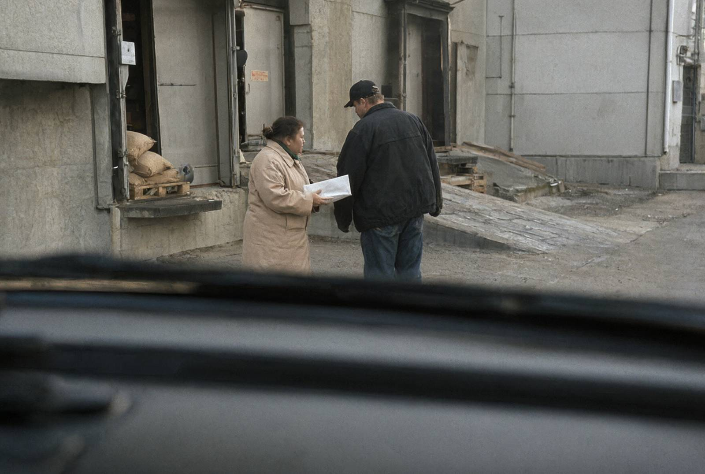
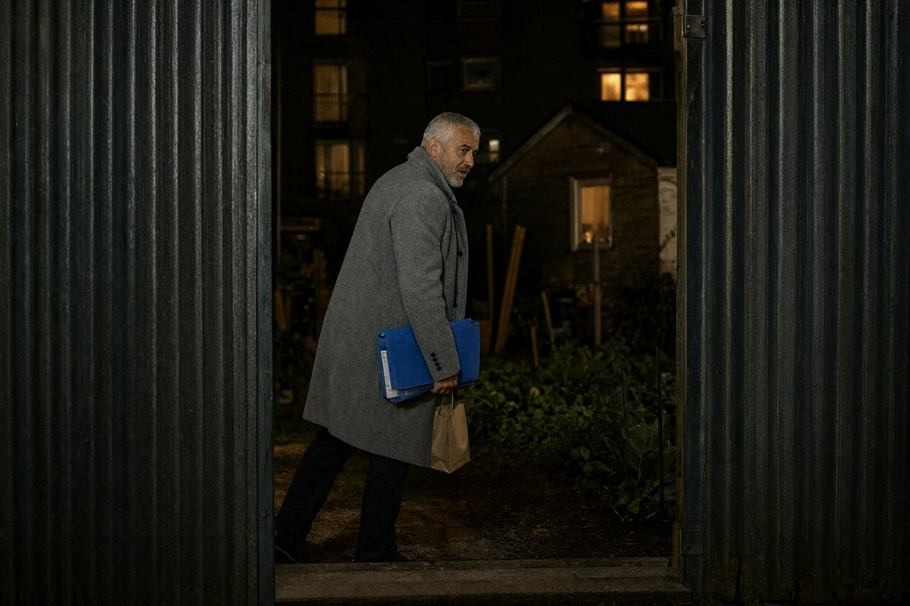
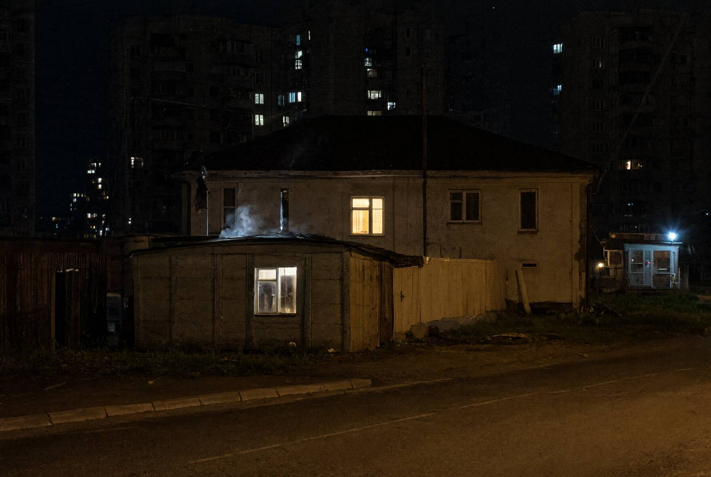

Доручення: встановити, з ким і де об'єкт (Палійчук В.І., автомобіль Toyota Land Cruiser AT 0003 КА) проводить вечірній час; зафіксувати можливі контакти романтичного характеру. Спостереження велося з автомобіля та пішки, з 07:00 до 23:00, фотофіксація — камерою з довгофокусним об'єктивом. Спостереження в приміщеннях і на закритій території ЖК не велося (законом не передбачено, та й охорона там серйозна).
| Дата, час | Зафіксовано | Фото |
|---|---|---|
| 06.10 07:12 | Об'єкт виходить у двір ЖК з двома паперовими стаканами кави (кав'ярня в секції 1), проходить через пролом у паркані до сусідньої приватної хати (вул. Пасічна, 41-А). 07:15–07:40 — п'є каву на лавці біля воріт з власницею хати (жінка похилого віку, хустка, собака на ланцюгу). Розмова жвава, власниця сміється й лупить об'єкта рушником. | — |
| 06.10 08:05 | Виїзд з паркінгу. 08:20–12:40 — кав'ярні «Чорне зерно» (вул. Незалежності, вул. Грушевського). 13:00–14:10 — діловий обід з двома чоловіками. 18:00–19:30 — спортзал. 19:50 — повернувся додому. Більше не виходив. | — |
| 07.10 07:15 | Кава на лавці з тією ж жінкою (див. 06.10). 10:00–17:30 — Калуш, дві кав'ярні мережі. 20:10 — удома. | — |
| 08.10 07:15 | Кава на лавці (див. вище). 09:00–18:00 — обсмажувальня, вул. Пасічна, 77. Контактів з жінками віком до 60 років, крім офіційних, не зафіксовано. | — |
| 09.10 07:55 | задні двері обсмажувальні: жінка в бежевому пальті (з офісу, повненька, ~55 років) передає конверт чоловікові в чорній кепці й темній куртці, ~190 см; на лівій кисті в чоловіка відсутній мізинець; обличчя не зафіксовано; пішов пішки в бік Пасічної (об'єкт у цей час — усередині будівлі; не стосується доручення) | V01 |
| 10.10 07:15 | Субота. Кава на лавці біля 41-А. До об'єкта й власниці приєднався молодий чоловік (~25 років, худий, темне волосся, курить). Об'єкт довго на нього дивився, розмова за лавкою припинилась. 07:50 — об'єкт пішов додому, з вигляду — засмучений. Решту дня — удома. | — |
| 11.10 12:00 | Неділя. Прогулянка пішки до урочища Дем'янів Лаз (меморіал), сам. Стояв біля хреста близько 20 хв. 14:00 — удома. | — |
| 12.10 09:10 | Обсмажувальня, офісна частина (2 поверх, бухгалтерія — за вивіскою на вікні). 11:20 — виходить із синьою пластиковою папкою, кладе її на переднє сидіння авто. 12:00–18:00 — кав'ярні. 19:30 — удома. | — |
| 13.10 22:10 | 22:10–22:35 — візит до Пасічна, 41-А (вечірній, через пролом у паркані). 22:35 — повернувся до ЖК. (Для порівняння: на лавці з кавою — щодня по 25 хв.) | — |
| 14.10 07:15 | Свято Покрови. Кава на лавці. 10:00–17:00 — Калуш. 18:55 — удома. 20:00–23:00 — у хаті 41-А гучна музика, святкування (об'єкт участі не брав). З боку ЖК хтось голосно обіцяв викликати поліцію. | — |
| 15.10 07:15 | Кава на лавці. 09:30–17:45 — кав'ярні (центр). 18:30 — прибув на обсмажувальню, Пасічна, 77. 19:40 — з будівлі чути крики (жіночий голос). 20:15 — з обсмажувальні виходить молода жінка з картонною коробкою речей, у сльозах, їде таксі. | — |
| 15.10 20:25 | Об'єкт виїжджає з обсмажувальні. 20:32 — заїзд на паркінг ЖК «Дем'янів лаз». Далі — спостереження з вул. Пасічної. | — |
| 15.10 22:41 | об'єкт із синьою папкою проходить через пролом у паркані до Пасічна, 41-А (у другій руці — паперовий пакет) | V02 |
| 15.10 22:50 | Телефонний звіт замовниці. | — |
| 15.10 22:58 | загальний вид: світло в хаті й літній кухні, світло в пості охорони | V03 |
| 15.10 23:00 | Спостереження завершено (кінець оплаченого часу). | — |

2026-10-09 07:55
2026-10-15 22:41
2026-10-15 22:58Спостереження велося 10 діб. Ознак подружньої невірності не виявлено. Об'єкт регулярно відвідує одиноку жінку 1947 р.н. (власниця домоволодіння за адресою вул. Пасічна, 41-А, за даними відкритих джерел), щоранку — з двома кавами, двічі — увечері. Жінка має собаку, курей і, судячи з запахів з літньої кухні, хобі. Романтичний характер стосунків бюро вважає малоймовірним, хоча за двадцять років практики бачило всяке.
Епізод від 09.10.2026 (передача конверта біля обсмажувальні) до предмета доручення не стосується і зафіксований з професійної звички. Бюро рекомендує замовниці не витрачати кошти на подальше спостереження, а поговорити з чоловіком. За кавою. Він, судячи з усього, це любить.
Відмітка слідчого. Копію звіту (2 арк.) і цифрові файли фото V01–V03 (оригінали, з метаданими камери) надано ФОП Тимчишиним В.Я. 19.10.2026 за письмовою згодою замовниці Палійчук І.О. Долучено до матеріалів провадження № 12026090010002417.
Дмитре Сергійовичу, якби знав — сидів би до ранку. Безкоштовно. В.Т.